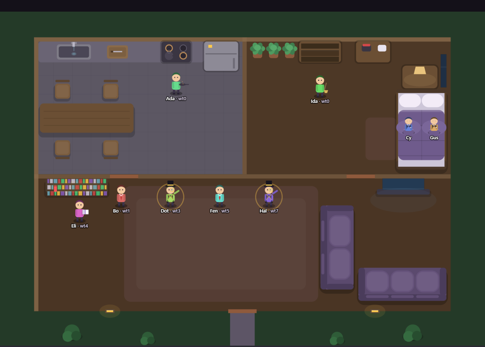
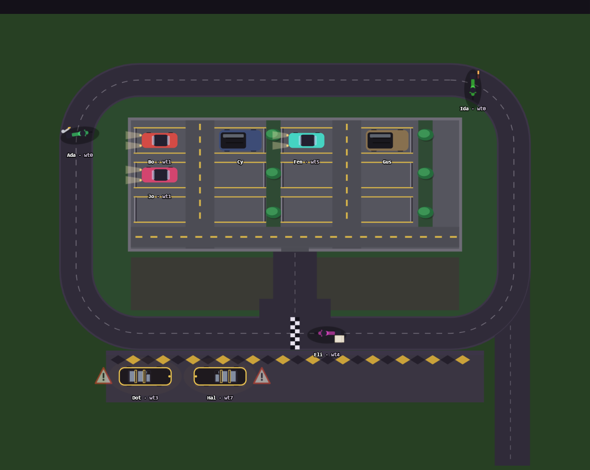

An ambient, glanceable view of your live Claude Code sessions. Every running session becomes an inhabitant of a small scene on your second monitor — you don't read logs, you glance and feel the whole fleet at once: who's working, who's raised a hand for you, who's gone quiet.

Cupola draws the same fleet two ways. Switch from the header dropdown — same data, different scene.
Each session is a person in a home, doing chores that map to what it's actually doing — cooking at the stove for Bash, watering plants for Edit/Write, on the phone for a spawned subagent. A hand goes up in the living room the moment a session needs you.

Each session is a vehicle sized by model — Haiku rides a motorcycle, Opus drives an SUV, Fable gets the luxury car. Working laps the circuit, idle parks with headlights on, and a blocked car pulls onto the shoulder with its hazards flashing.
| working | actively running a tool right now — hooks report this live, not from polling |
| needs you | a real pending question or permission prompt — never guessed, only a genuine Notification raises this |
| idle | ready and waiting, nothing pending |
| gone quiet | no activity for 10+ minutes |
The transcript is written retroactively — a tool call only lands in the file after it finishes, so a session mid-command and one sitting idle are byte-identical on disk. Polling the transcript can't show you what's happening right now, and it can't show you a pending question at all — hooks are the only source for either, which is the whole reason Cupola exists instead of being one more log tail.
No dependencies, no build step, no bundler. The whole daemon is one file, deliberately small enough to actually audit.
It serves your prompts and questions verbatim. That's fine on your own machine and not something to put behind a public proxy.
An Origin/Host match and a random token minted at startup, embedded only in the page it serves itself. A drive-by page can forge neither.